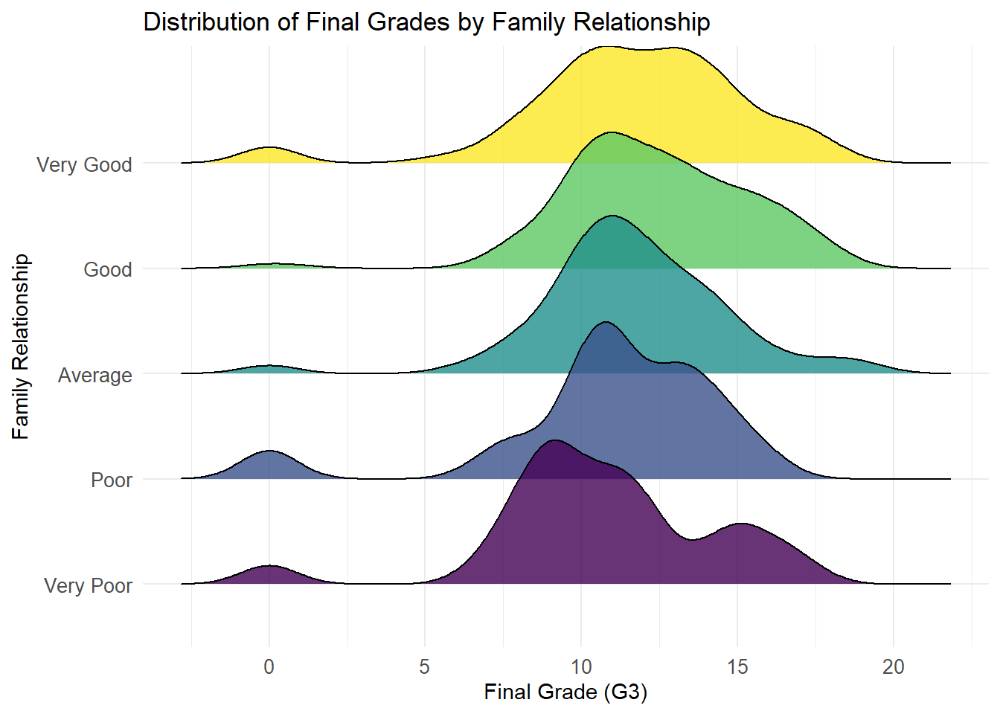
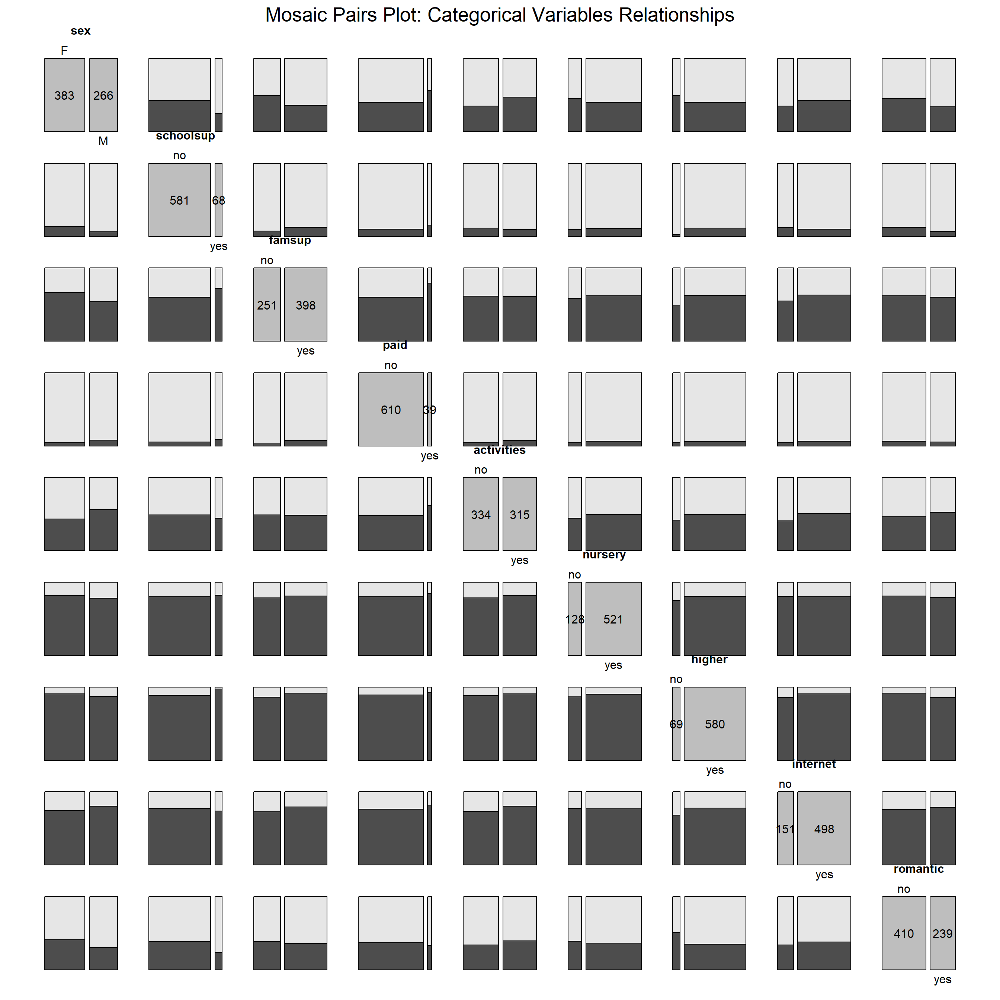

This parallel coordinate plot highlights group-level differences based on the reason for school choice. The reputation group consistently performs better academically (higher grades in G1, G2, G3) and has higher parental education levels (Medu, Fedu), suggesting a stronger academic focus and support system. In contrast, the other group tends to underperform in grades, indicating potential challenges or differing motivations. Behavioral variables like Dalc (weekday alcohol consumption) and Walc (weekend alcohol consumption) show little variation across groups, while the home group demonstrates slightly better health and lower absences, possibly due to proximity benefits. These patterns suggest a need for tailored support for underperforming groups like other.
Code
library(vcd)
Loading required package: grid
Code
# Subset your categorical columnscategorical_data <- data[, c(2, 16:23)]# Ensure all categorical columns are factorscategorical_data[] <-lapply(categorical_data, as.factor)# Create a contingency tabledata_table <-table(categorical_data)par(cex =0.1, mar =c(5, 5, 5, 5)) # Adjust text scaling and margins# Create a mosaic pairs plotpairs(data_table, highlighting =2)
This mosaic plot highlights the distribution and relationships among categorical variables, showing dominant categories such as more females (F), prevalent yes responses for variables like higher, internet, and romantic, and notable imbalances in categories like schoolsup and famsup. Pairwise associations, such as students with nursery = yes often having higher = yes, provide insights into potential dependencies.
Code
library(vcd)library(dplyr)library(forcats)library(RColorBrewer)data$G3_group <-case_when( data$G3 >=15~"High", data$G3 >=10~"Medium",TRUE~"Low")data$G3_group <-as.factor(data$G3_group)palette <-brewer.pal(n =length(levels(data$G3_group)), name ="Set3")vcd::mosaic(G3_group ~ famsup + higher + schoolsup, data, direction =c("v", "v", "v", "h"),highlighting_fill = palette,main ="Mosaic Plot of G3 Grade Group by Family Support and Higher Education" )
Code
library(ggplot2)library(tidyr)library(scales) # For a more aesthetic color palette
Attaching package: 'scales'
The following object is masked from 'package:readr':
col_factor
Code
# Convert the data to long formatdata_long <- data %>%pivot_longer(cols =c(G1, G2, G3), names_to ="GradeType", values_to ="GradeValue")# Plot with modificationsggplot(data_long, aes(x = GradeValue, fill = GradeType, color = GradeType)) +#geom_histogram(aes(y = ..density..), position = "identity", alpha = 0.3, bins = 10) + # Use densitygeom_density(alpha =0.3, size =0.8) +# Overlay density curvesfacet_wrap(~ guardian, scales ="free") +# Facet by guardianlabs(title ="Distribution of G1, G2, and G3 by Guardian",x ="Grade Value",y ="Density" ) +scale_fill_manual(values =c("steelblue", "pink", "darkseagreen")) +# Adjust fill colorsscale_color_manual(values =c("steelblue", "pink", "darkseagreen")) +# Adjust line colorstheme_minimal() +theme(legend.title =element_text(size =12),legend.text =element_text(size =10),strip.text =element_text(size =12) # Adjust facet labels size )
Warning: Using `size` aesthetic for lines was deprecated in ggplot2 3.4.0.
ℹ Please use `linewidth` instead.

This density plot, faceted by guardian type, shows the progression of grades (G1, G2, G3) with consistent improvement from G1 to G3 across all guardians. The “father” and “mother” categories display tightly grouped distributions with peaks in the middle-to-high range, while the “other” category shows greater variability in G3 grades. This suggests a potential relationship between guardian type and grade progression, with G3 consistently achieving higher densities across all groups.
Code
# Load necessary librarieslibrary(ggplot2)library(ggfortify)library(dplyr)# Prepare data by removing G1, G2, and G3 and ensure only numeric variables are usedpca_data <- data[, !(names(data) %in%c("G1", "G2", "G3"))]pca_data <- pca_data[sapply(pca_data, is.numeric)] # Keep only numeric columns# Perform PCApca_result <-prcomp(pca_data, center =TRUE, scale. =TRUE)# Add G3 group labels (Low, Medium, High)data$G3_group <-factor(ifelse(data$G3 >=15, "High",ifelse(data$G3 >=10, "Medium", "Low")))# Prepare PCA results for plottingpca_plot_data <-data.frame(pca_result$x, G3_group = data$G3_group)# Aggregate to get one point for each groupaggregated_data <- pca_plot_data %>%group_by(G3_group) %>%summarize(PC1 =mean(PC1), PC2 =mean(PC2))# Create the biplotggplot(aggregated_data, aes(x = PC1, y = PC2, color = G3_group)) +geom_point(size =5, alpha =0.8) +geom_text(aes(label = G3_group), vjust =-1, size =4) +geom_segment(data =as.data.frame(pca_result$rotation), aes(x =0, y =0, xend = PC1 *2, yend = PC2 *2),arrow =arrow(length =unit(0.2, "cm")), color ="blue") +geom_text(data =as.data.frame(pca_result$rotation), aes(x = PC1 *2.2, y = PC2 *2.2, label =rownames(pca_result$rotation)),color ="blue", size =4) +labs(title ="Biplot with G3 Grade Groups (Low, Medium, High)",x ="PC 1 (Principal Component 1)", y ="PC 2 (Principal Component 2)") +theme_minimal()
This PCA biplot effectively illustrates the relationships between variables and their influence on distinguishing G3 grade groups (Low, Medium, High). Key variables like studytime, Medu, and Fedu align with higher grades, while failures and age are associated with lower grades. The directions and proximities of arrows reveal correlations among variables, such as Walc and Dalc. The separation of G3 groups along PC1 highlights how these variables differentiate grade performance, making the plot a valuable tool for understanding underlying patterns.
data_famrel <- data %>%mutate(famrel =factor(famrel, labels =c("Very Poor", "Poor", "Average", "Good", "Very Good")) )ggplot(data_famrel, aes(x = G3, y = famrel, fill = famrel)) +geom_density_ridges(alpha =0.8, scale =1.5) +scale_fill_viridis_d(option ="D") +theme_minimal(base_size =14) +theme(legend.position ="none", axis.text.y =element_text(size =12),axis.text.x =element_text(size =12) ) +labs(title ="Distribution of Final Grades (G3) by Family Relationship",x ="Final Grade (G3)",y ="Family Relationship",fill ="Family Relationship" )
Picking joint bandwidth of 0.94

Code
library(ggplot2)ggplot(data, aes(x = absences, y = G3, color = sex)) +geom_point(alpha =0.7, size =2) +facet_wrap(~ failures, labeller =labeller(failures =c("0"="No Failures","1"="1 Failure","2"="2 Failures","3"="3 Failures","4"="4+ Failures" ))) +theme_minimal(base_size =14) +labs(title ="Absences vs Final Grades by Failures and Gender",x ="Absences",y ="Final Grades (G3)",color ="Gender" )
Code
ggplot(data, aes(x = G3)) +geom_histogram(aes(y = ..density..), binwidth =1, fill ="skyblue", color ="black", alpha =0.7) +geom_density(aes(color = sex), size =1) +scale_color_manual(values =c("F"="royalblue", "M"="red"), name ="Gender") +facet_wrap(~ health, labeller =labeller(health =c("1"="Very Poor","2"="Poor","3"="Average","4"="Good","5"="Very Good" ))) +theme_minimal(base_size =14) +labs(title ="Distribution of Final Grades (G3) by Health Status",x ="Final Grades (G3)",y ="Density",subtitle ="Faceted by Health Status",color ="Gender" )
Warning: The dot-dot notation (`..density..`) was deprecated in ggplot2 3.4.0.
ℹ Please use `after_stat(density)` instead.
Code
library(jsonlite)# Load your dataset# Unique family relationship levelsfamily_levels <-unique(data$famrel)# Prepare a list to store resultsdensity_data <-list()for (level in family_levels) {# Filter data for the current level subset <- data$G3[data$famrel == level]# Calculate density density_result <-density(subset, from =0, to =20) # Adjust range as needed# Store results density_data[[level]] <-list(x = density_result$x,y = density_result$y )}# Save as JSONwrite(toJSON(density_data, pretty =TRUE), "density_data.json")print("Density data saved to density_data.json")